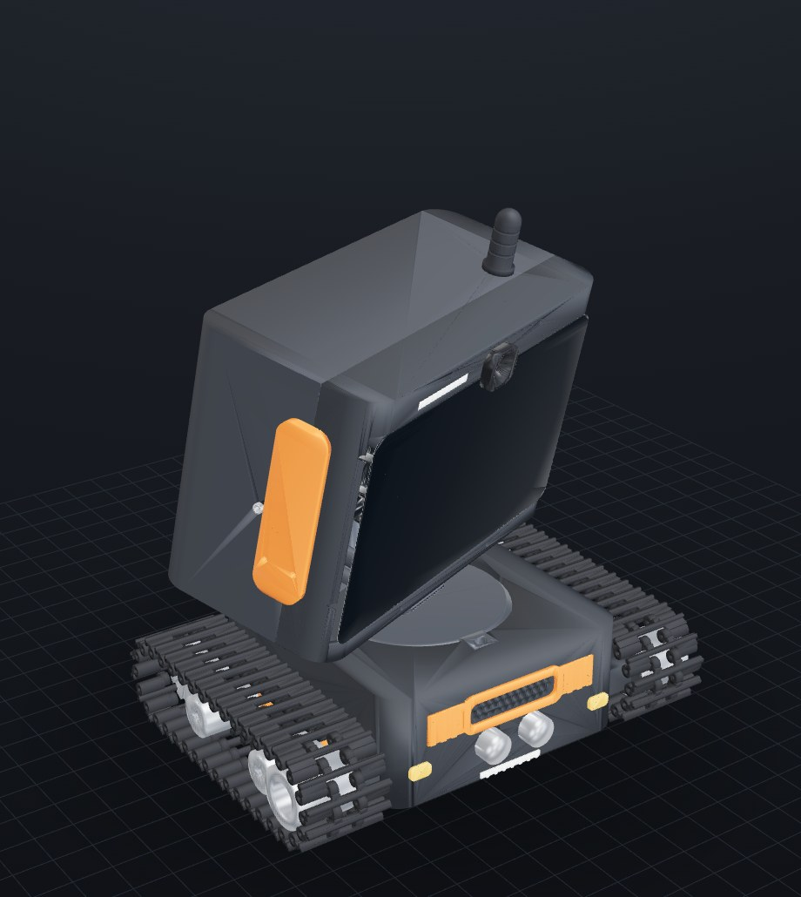

desk-pi · documentation
Documentation
Parviz, the tracked desk robot: a Raspberry Pi 5 head on a pan/tilt neck riding a two-track tank chassis. The docs below are rendered from the repo's markdown by make docs.

Build
ElectronicsEvery electronic component: role, owned/ordered/buy status, reference CAD models.AssemblyFull BOM (inventory-checked) and the verified step-by-step assembly order.Wiring & powerOne USB-C wall cable, 12V PD trigger, dual-buck belly tray, rails and fusing.PrintabilityPlates, orientations, supports, and the slice-check gate.
Design
Fix ledgerThe verified-defect ledger from the multi-agent review campaigns.Worm driveGenerated involute worm pair: geometry, verification, regeneration record.Arm mechanismGripper arm mechanism study (rack-and-sector parallel gripper).Cable checkCable routing audit: base to head, joint crossings, service loop.Reference auditAudit of the reference meshes the build keys off.